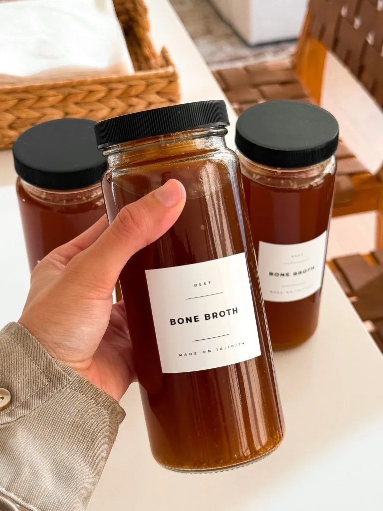

DRINKS | SOUP
Prep Time: 1 hour
Cook Time: 3 to 4 hours
Total Time: 3 to 5 hours
Yields: 8 to 10 cups
This cozy, homemade beef bone broth is packed with rich flavor and way more satisfying than anything store-bought! Roasting the bones and veggies adds so much depth, and with warming spices like cinnamon and turmeric, it's perfect for those chilly days. Plus, it's full of nutrients and feels like a hug in a bowl—you'll never go back to the store-bought version again!
Jump To RecipeThere’s nothing like a cozy, warm bowl of beef bone broth, especially when the weather starts to cool down. This homemade version has all the flavor and goodness you’ll ever need, and it’s so much better than anything you’ll find on store shelves! Roasting the bones and veggies before simmering them adds layers of deep, rich flavor, and with warming spices like cinnamon and turmeric, this broth is perfect for sipping straight or using as a base for soups, stews, or even sauces. Let’s dive into how to make this cozy, nutrient-packed beef bone broth in the Instant Pot!
First, let’s talk about the bones! You want a mix of different types to get the best flavor and texture. You can use marrow bones for that rich flavor, knuckle bones or joints for extra collagen, short ribs for some added meaty bits, or oxtails for a balance of both. I personally used a combination of short ribs, oxtail, and bone marrow in this batch, but feel free to mix and match depending on what you have or can find.
Start by boiling the bones for a bit to remove any impurities. This helps make the broth nice and clean, giving it a better flavor and appearance. After a quick boil, drain the water, rinse the bones, and get them ready for the oven.
Roasting the bones is key here. It brings out all the rich, deep flavors we love in a broth. Toss your bones, along with roughly chopped celery, carrots, and onions, onto a baking sheet. Don’t worry about being precise—just give them a rough chop. Roast everything until you get a beautiful brown color on the bones and a little caramelization on the veggies. Trust me, this step makes all the difference!
Once your bones and veggies are beautifully roasted, it’s time to transfer them to the Instant Pot. Throw in some garlic cloves, thyme sprigs, bay leaves, salt, and a cinnamon stick or two for that extra layer of warmth. We’ll also add a dash of turmeric for its earthy flavor and all its amazing anti-inflammatory health benefits. Don’t forget a few peppercorns and a pinch of cayenne for just a little heat, but you can adjust the spice level to your liking. And finally, a splash of apple cider vinegar. This might seem unusual, but it helps draw out the minerals and nutrients from the bones, making the broth even more nutritious.
Now, pour in enough water to cover everything. Just be sure not to go past the “Max Fill” line in your Instant Pot! Pop the lid on, set it to high pressure, and let it cook for at least two hours. If you want an even richer broth, you can go for up to four hours. I cooked it on high pressure for three hours. The longer you let it simmer, the deeper the flavor becomes.
After the broth is done cooking, let the pressure release naturally—this takes about 20 to 30 minutes, but it’s worth the wait. Once the lid is off, you’ll immediately smell how rich and fragrant the broth is! Strain it through a fine-mesh strainer into a large container, discarding the bones, veggies, and spices. If you spot any leftover meat on the bones, feel free to save it—it’s great to add into soups later.
Now, let the broth cool down before you pop it in the fridge. After a few hours, the fat will solidify on top, making it easy to skim off if you prefer a lighter broth. You can store your broth in the fridge for about five days or freeze it for up to a few months. I love pouring it into ice cube trays and freezing them, so I always have a little broth ready to go for quick recipes!
Here’s where you can get creative! Don’t have cinnamon sticks? No problem—leave them out or swap them with another warming spice like cloves or star anise. You can also toss in fresh herbs like parsley or rosemary, or switch up the veggies. If you’ve got leeks, fennel, or even parsnips, feel free to throw them in. Bone broth is super versatile, so make it your own!
If you want a lighter flavor, reduce the roasting time or skip roasting altogether and just boil the bones. But honestly, roasting adds so much flavor that I rarely skip it.
Looking for a thicker, gelatin-rich broth? Try adding more knuckle or joint bones—these have a higher collagen content, which gives your broth that silky, luscious texture when chilled. It’s perfect if you’re using the broth for sauces or gravies!
Got leftover broth? Lucky you! This broth is perfect for sipping straight from a mug when you want something cozy and nourishing. You can also use it as a base for soups, stews, or even cook grains like rice or quinoa in it for an extra flavor boost. It makes an amazing base for ramen or pho, too.
If you’re planning ahead, bone broth is the ultimate make-ahead recipe. You can batch-cook a large amount, freeze it, and have it ready for whenever you need a quick meal or just a cozy, warm sip. Just remember to freeze it in smaller portions for easy defrosting.
Enjoy your cozy bowl of homemade goodness! There’s really nothing better, and once you start making your own, you’ll never go back to store-bought.
If you tried this recipe and loved it, drop by down below and let me know how you liked it with a rating and comment! Feel free to also leave a question there about this recipe and I’ll get right back to it.
To see more recipes and behind-the-scenes, follow along on Instagram and Youtube! I’m also now on Pinterest pinning away so stop by and see what’s up.
DRINKS | SOUP
This cozy, homemade beef bone broth is packed with rich flavor and way more satisfying than anything store-bought! Roasting the bones and veggies adds so much depth, and with warming spices like cinnamon and turmeric, it's perfect for those chilly days. Plus, it's full of nutrients and feels like a hug in a bowl—you'll never go back to the store-bought version again!
Prep Time: 1 hour
Cook Time: 3 to 4 hours
Total Time: 3 to 5 hours
Yields: 8 to 10 cups